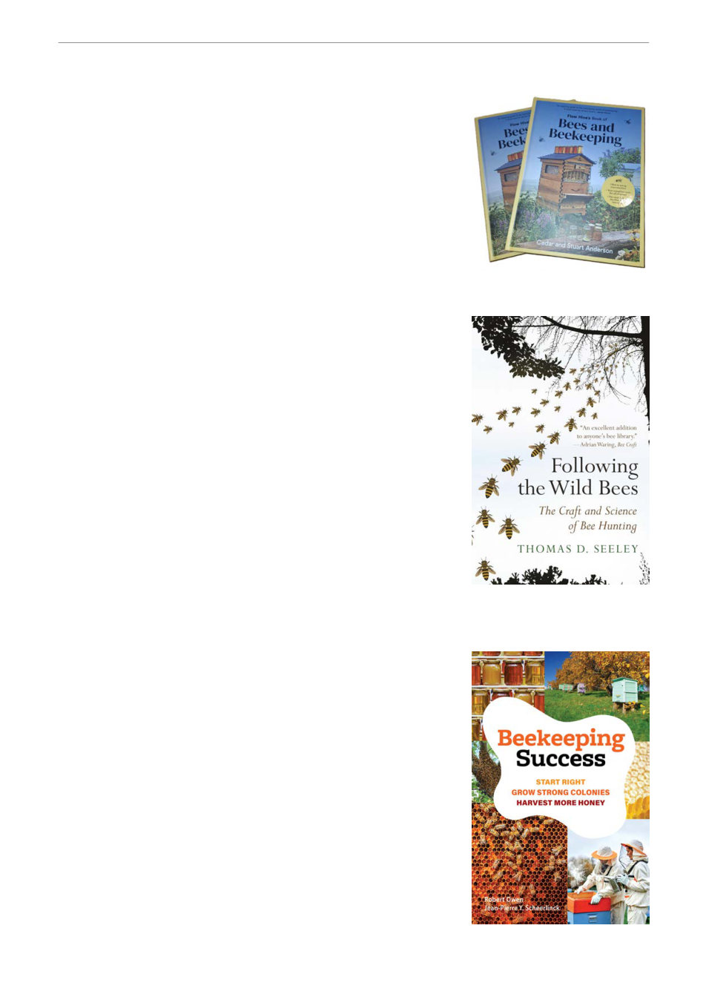

Books Spotlight
New in the Club Library: Flow Hive’s Book of Bees and
Beekeeping has landed — a practical, inspiring guide from Stuart
and Cedar Anderson, the inventors who reshaped modern
beekeeping. Packed with beginner-friendly hive setup tips,
year‑round care advice, step‑by‑step honey harvesting, pest
management know‑how, troubleshooting help, honey recipes and
more, it’s a one‑stop resource for anyone looking to level up their
beekeeping. Alongside the how‑to’s, the Andersons share the
remarkable story behind the Flow Hive’s rise from backyard
experiment to global phenomenon. Whether you’re brand new or a
seasoned keeper, this book is overflowing with wisdom, innovation
and bee-loving enthusiasm. The Club has purchased two copies of this title.
New in the Club Library: Following the Wild Bees by renowned bee
biologist Thomas D. Seeley is a captivating blend of natural history,
hands‑on guidance, and pure outdoor adventure. Seeley — a world
authority on honey bees and Horace White Professor at Cornell
University — draws on decades of research to reveal the lost art of
bee hunting, weaving together wild bee biology, historical
anecdotes, personal insights, and stunning photography. Described
as “a delightful foray into the pastime of bee hunting” and “scientific
natural history at its very best,” the book shows how anyone can
track honey bees from flower patches to their hidden forest homes,
offering both a meditative appreciation of nature and a practical
guide to an exhilarating craft. Whether you’re a beekeeper, a
naturalist, or simply curious, this is a gem for anyone who loves
understanding bees in their truly wild state.
New book - Beekeeping Success:
A new beekeeping title releasing this August from Dr Robert Owen, one of Australia's most
respected beekeeping educators and the author of The Australian Beekeeping Manual.
Designed for beginner and hobbyist beekeepers, Beekeeping
Success answers more than 300 real-world questions about
starting and managing hives. Covering everything from choosing
equipment and sourcing bees to swarm management, hive health,
pests, diseases, and honey production, it is a practical, easy-to-use
guide that beekeepers can dip into whenever they need answers.
With its question-and-answer format, clear explanations, and
hundreds of photographs and diagrams, it is an ideal
recommendation for new members, course participants, and
anyone starting their beekeeping journey.
Beekeeping Success: Start Right, Grow Strong Colonies, Harvest
More Honey
ISBN: 9781923011281. Release: August 2026. RRP: $34.99 AUD.
The club will consider purchasing a copy for the club library, and
this title will also be available in our next GBK Book Drive.